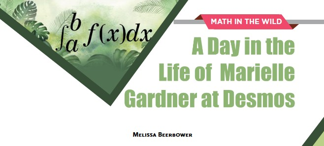

About me

I'm a Mathematics graduate student and teaching assistant at University of Wisconsin-Milwaukee. I am especially interested in discrete math and algebras. My current research focuses on parking functions, specifically the lucky polynomial of Fubini rankings.
Contact information
You can reach me at beerbow2@uwm.edu
News

I recently published an article in Math Horizons describing an interview with Marielle Gardner about her path to becoming a mathematician. You can download the pdf here.